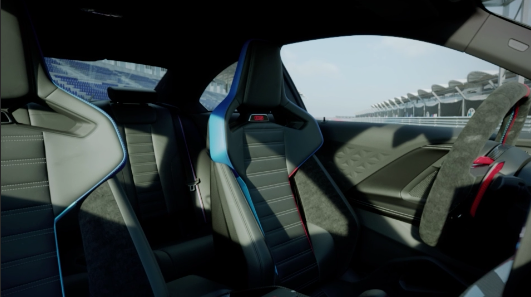
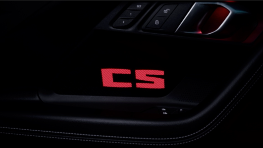

BMW M2 COUPE

Exterior colour: BMW Individual Velvet Blue metallic
Wheels: M light-alloy wheel star spoke 827 M Gold Bronze
Upholstery: Black Full Merino Leather
Interior trims: M interior trim finishers 'Carbon Fibre'

RACING DNA.
The M TwinPower Turbo inline 6-cylinder of the BMW M2 CS features superior power delivery and the striking characteristic M sound. The engine delivers an outstanding 390 kW (530 hp) and a maximum torque of 650 Nm. The 3.0-litre unit has had track performance as its raison d’être from day one of its development. Indeed, it also provides the basis for the engine in the BMW M4 GT3 EVO race car.

Thanks to intelligent lightweight design, the weight of the BMW M2 CS is reduced by roughly 30 kilograms compared to the standard M2. The whole chassis technology is precisely tailored to the improved performance characteristics of the engine and the specific balance of the special-edition model.
| TECHNICAL DETAILS | |
|---|---|
| Adaptive M suspension | The adaptive M suspension allows to adjust the damper characteristics to suit any given driving situation, increasing driving dynamics and comfort. In addition to the standard COMFORT setting for increased driving comfort, the SPORT programme offers firmer damper settings, while with SPORT+, the vehicle can be used on the circuit. This makes the BMW M2 CS perfectly equipped for all driving situations – whether on the road or on the racetrack. |
| M Carbon ceramic brake. | The optional M Carbon ceramic brake responds even more directly to braking manoeuvres than the M Compound brake system. As it is corrosion-free and highly heat-resistant, it has less wear than conventional brake systems and, thanks to its weight-optimised design, increases the agility and dynamics of the BMW M2 CS. Both brake systems feature brake callipers in Red with an M logo in the front. |
| 8-speed M Steptronic sport transmission. | The 8-speed M Steptronic Sport transmission with Drivelogic of the BMW M2 CS offers numerous shifting options: extremely dynamic, particularly comfortable and smooth, or fuel-saving. You can shift manually using the gear lever or the gearshift paddles on the steering wheel, or select one of three automatic programmes using Drivelogic. |
| M Drive Professional. | With M Drive Professional, the BMW M2 CS does not only benefit from the M Drift Analyser and M Laptimer functions for evaluating and recording driving skills and performance on the track, it additionally comes with M Traction Control, whose ten stages provide the ideal tools for pushing the car hard on closed circuits. The M Mode button on the centre console – also part of the M Drive Professional package – can be used to adjust both the level of driver assistance system activity and the content shown in the information display and optional Head-Up Display, with a choice of ROAD, SPORT and TRACK settings. |

M Carbon bucket seats.
The weight-optimised, heated M Carbon bucket seats with a wide range of electrically controlled settings feature an illuminated “CS” logo. The integrated head restraints are removable and, thanks to the option of integrating multi-point harnesses, improve the car’s track readiness.

CS door trim panels.
Illuminated with the “CS” logo, the door trim panels certainly grab the attention. The colour used here can be set individually, likewise the standard ambient lighting. When switched off, a carbon structure is visible.
| Quick Links |
|---|
| HOME |
| CARS |
| EXPERIENCES |
| CALCULATOR |